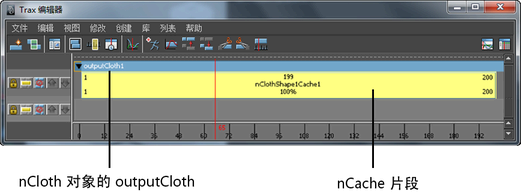
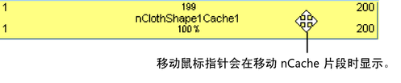
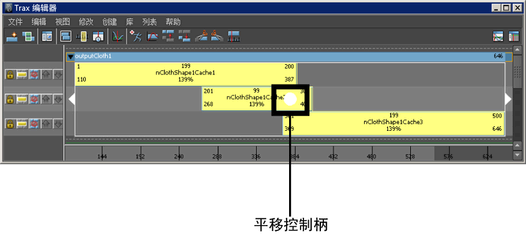
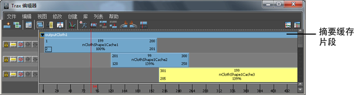

在“Trax 编辑器”(Trax Editor)中，nCache 节点是由 nCache 片段表示的。使用这些缓存片段，可以清楚地查看 nCache 之间的关系，并以非线性方式编辑缓存的模拟。这允许同时直观地管理、操纵和定向所有对象的缓存。
查看 nCache 片段
- 在查看对象的缓存片段之前，首先需要缓存对象的模拟。请参见创建或导入 nCache。
- 在场景视图中，选择要查看其缓存片段的 Nucleus 或流体对象。
- 打开“Trax 编辑器”(Trax Editor)（“窗口 > 动画编辑器 > Trax 编辑器”(Window > Animation Editors > Trax Editor)）。
- 在“Trax 编辑器”(Trax Editor)菜单栏上，选择“列表 > 加载选定角色”(List > Load Selected Characters)。
所有选定对象的缓存节点会作为缓存片段加载到“Trax 编辑器”(Trax Editor)中。每个片段会放置在它自己的轨迹上，并会按对象的缓存标签（outputCloth 对应于 nCloth 缓存，nParticleShape 对应于 nParticle 缓存，fluidShape 对应于流体缓存）对所有对象的缓存片段进行分组。

从 Trax 选择对象
- 在“Trax 编辑器”(Trax Editor)中，为要在场景中选择的对象选择 nCache 片段。
- 在轨迹视图中，在缓存片段上单击鼠标右键 (
 )，然后从显示的上下文相关菜单中选择“选择几何体”(Select Geometry)。
)，然后从显示的上下文相关菜单中选择“选择几何体”(Select Geometry)。 现在已在场景中选中了缓存片段的对象。
移动 nCache 片段
- 在场景视图中，选择要移动其缓存片段的对象。
- 在“Trax 编辑器”(Trax Editor)中，选择“列表 > 加载选定角色”(List > Load Selected Characters)。
所有当前对象的缓存都会在轨迹视图中显示为片段。
- 请执行以下操作：
- 若要在时间方向上向前或向后移动 nCache 片段，请来回拖动缓存片段。
- 若要将 nCache 片段移动到其他轨迹，请向上或向下拖动缓存片段。

在时间方向上移动多个 nCache 片段
- 在场景视图中，选择要移动其缓存片段的对象。
- 在“Trax 编辑器”(Trax Editor)中，选择“列表 > 加载选定角色”(List > Load Selected Characters)。
所有当前对象的缓存都会在轨迹视图中显示为片段。
-
 键并
键并 单击要移动的缓存片段。
单击要移动的缓存片段。 将显示平移控制柄。
 - 向左或向右拖动平移控制柄以同时移动所有选定的缓存片段。
选定的缓存片段会在时间方向上向前或向后移动，从而更改其“开始帧”(Start Frame)值。
在时间方向上移动对象的所有 nCache 片段
- 在场景视图中，选择要移动其缓存片段的对象。
- 在“Trax 编辑器”(Trax Editor)中，选择“列表 > 加载选定角色”(List > Load Selected Characters)。
当前对象的所有缓存在轨迹视图中均显示为片段。
- 向左或向右拖动对象的摘要缓存片段。 
对象的所有缓存片段会在时间方向上向前或向后移动，从而更改对象的所有缓存片段的“开始帧”(Start Frame)。
锁定、单放或禁用 nCache 轨迹
锁定 nCache 轨迹
- 在场景视图中，选择要锁定其 nCache 片段轨迹的对象。
- 在“Trax 编辑器”(Trax Editor)中，选择“列表 > 加载选定角色”(List > Load Selected Characters)。
所有当前对象的缓存都会在轨迹视图中显示为片段。
- 在轨迹控制区域中，单击要锁定的 nCache 轨迹左侧的“锁定”(Lock)按钮
 。
。
“锁定”(Lock)按钮会冻结 nCache 轨迹。如果轨迹已锁定，则无法编辑其缓存片段，但在播放期间其缓存模拟存在。可以锁定 nCache 轨迹，这样不会意外修改其缓存片段。
单放 nCache 轨迹
- 在场景视图中，选择要单放其 nCache 片段轨迹的对象。
- 在“Trax 编辑器”(Trax Editor)中，选择“列表 > 加载选定角色”(List > Load Selected Characters)。
所有当前 nCache 都会在轨迹视图中显示为片段。
- 在轨迹控制区域中，单击要单放的几何缓存轨迹左侧的“单放”按钮
 。
。
“单放”(Solo)按钮会隔离选定轨迹上的 nCache 片段，这样它们就是在播放期间使用的仅有缓存。需要隔离并查看特定轨迹的缓存对模拟产生的影响时，单放是很有用的。
禁用 nCache 轨迹
- 在场景视图中，选择要禁用其 nCache 片段轨迹的对象。
- 在“Trax 编辑器”(Trax Editor)中，选择“列表 > 加载选定角色”(List > Load Selected Characters)。
所有当前对象的缓存都会在轨迹视图中显示为片段。
- 在轨迹控制区域中，单击要禁用的几何缓存轨迹左侧的“禁用”按钮
 。
。
“禁用”(Mute)按钮会隐藏选定轨迹的已缓存模拟，而不会从“Trax 编辑器”(Trax Editor)移除该轨迹。需要查看未受某些轨迹的缓存影响的模拟时，“禁用”是很有用的。
在“属性编辑器”或“通道盒”中更改几何缓存节点的名称也会更改“Trax 编辑器”中其相应的几何缓存片段的名称。
启用或禁用 nCache 片段
启用或禁用 nCache 片段也会启用或禁用其相应的缓存节点和“属性编辑器”(Attribute Editor)选项卡。
启用或禁用单个 nCache 片段
- 在场景视图中，选择要启用或禁用其缓存片段的对象。
- 在“Trax 编辑器”(Trax Editor)中，选择“列表 > 加载选定角色”(List > Load Selected Characters)。
所有当前对象的缓存都会在轨迹视图中显示为片段。
- 选择要启用或禁用的 nCache 片段。
- 执行下列操作之一：
- 在轨迹视图中，在选定的缓存片段上单击鼠标右键 ()。在出现的上下文相关菜单中，打开“启用”(Enable)以使缓存片段处于活动状态，或关闭“启用”(Enable)以使缓存片段处于非活动状态。
- 在 Trax 菜单栏上，选择“修改 > 启用/禁用”(Modify > Enable/Disable)可使选定的缓存片段变为活动或非活动状态，具体取决于其当前状态。
- 在轨迹视图中，在选定的缓存片段上单击鼠标右键 (
启用或禁用对象的所有 nCache 片段
通过启用或禁用对象的 nCache，可以启用或禁用该对象的所有 nCache 片段。请参见下面的过程。
禁用对象的所有 nCache
- 选择要禁用其所有缓存的对象。
- 在 FX 菜单集中，选择“nCache > 禁用选定对象的所有缓存”(nCache > Disable All Caches On Selected)。
当前对象的所有活动缓存节点和缓存片段会被禁用。现在，在播放时其对象不会使用这些缓存节点和缓存片段。
启用对象的所有 nCache
- 选择要启用其所有缓存的对象。
- 在 FX 菜单集中，选择 > 。
当前对象的所有非活动缓存节点和缓存片段会被启用。现在，在播放时其对象将会使用这些缓存节点和缓存片段。
启用或禁用单个 nCache
- 选择要为其启用或禁用单个缓存的 nCloth 对象。
- 在“属性编辑器”(Attribute Editor)中，选择要启用或禁用的 nCache 对应的选项卡。
- 在“缓存文件”(Cache File)区域中，执行下列操作之一：
- 打开“启用”(Enable)以激活缓存。
nCache 节点及其相应的缓存片段会变为活动状态。现在，在播放时其对象会使用该缓存片段。
- 关闭“启用”(Enable)以停用缓存。
nCache 节点及其相应的缓存片段会变为非活动状态。现在，在播放时其对象不会使用该缓存片段。